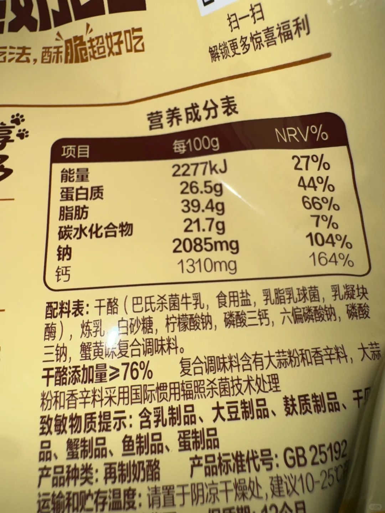

脆
奶酪
评价整理
小红书公开笔记归档
← 返回列表
这个钠含量是和意为啊
yeah
07-21
赞 20
收藏 5
评论 28
#伊利脆奶酪
#食品添加剂 #伊利#高钠

评论
12 条主评
123
07-22 广东
♥ 22
干酪制作要加盐固化，就类似我们做豆腐要加卤水，你看干酪成分表里就有食用盐，另外钠含量还来自几种添加剂柠檬酸钠，六千磷酸酶，磷酸三纳，复合调味料。104%表示你吃100克这种零食，就已经摄入了成年人体一天所需钠含量的104%，就是超标了。
yeah
作者
07-22 辽宁
♥ 2
感谢科普
sad and bad
07-24 辽宁
♥ 0
👍
ㅤ
07-21 山西
♥ 10
这个100g所含的钠就超过人体所需要的量了
小红薯38A194250
07-23 江西
♥ 13
这玩意儿就是个脱水奶酪跟爆米花一样的吃一袋二十克就差不多腻了你能一下吃五袋，有这胃口该考虑的也不是钠超标的问题而是有没有肥胖症了
用户已注销
07-22 浙江
♥ 3
真的吓人，吃一包就占了一天20%
yeah
作者
07-22 辽宁
♥ 0
回复 你好（晚10～11 : 是啥啊
你好（晚10～11
07-22 江苏
♥ 0
回复 yeah : 🤭问问ai吧
yeah
作者
07-22 辽宁
♥ 0
回复 你好（晚10～11 : 总不能是nacl吧
你好（晚10～11
07-22 江苏
♥ 1
回复 yeah : 😋没事能吃，你问问ai就知道了
你好（晚10～11
07-23 江苏
♥ 0
回复 小红薯38A194250 : 赞同
你好（晚10～11
07-22 江苏
♥ 1
回复 用户已注销 : 🐶奶酪是啥自己去搜搜
yeah
作者
07-22 辽宁
♥ 1
回复 你好（晚10～11 : ai软广？
辣条大王♀
07-24 浙江
♥ 2
100克才2克多吗？卤味制品比他多了去了
机器人wali
07-24 河南
♥ 1
人体一天摄入的钠含量应该低于2000毫克，这也就意味着你吃100克，它就超标了。长期钠超标，会增加心血管疾病、高血压等风险，并且极其不利于减脂人群。
LengthZai
07-22 广东
♥ 4
干酪制作要加盐令蛋白质构象变化从而排水。
yeah
作者
07-22 辽宁
♥ 1
这样啊👀
巴特勒
07-25 湖南
♥ 1
🤭脂肪也是高的吓人
红豆包
07-24 广东
♥ 2
真的减肥一定不能碰这个，不是热量高不高的问题🐶如果打算让身形状态没那么打击人，真的要保持长期低盐，当然，我做不到🐶
歪比巴卜
07-21 湖北
♥ 0
这不能吃吧兄弟
yeah
作者
07-22 辽宁
♥ 0
误食了😭
🔍
07-21 山东
♥ 0
奶酪本来就很咸的
小红薯6853C074
07-24 河北
♥ 0
䂋
大虾
07-22 广西
♥ 0
添加量第二多就是盐
Will的减脂日记
07-24 北京
♥ 1
100克含40克脂肪竟然不是你关注的重点，在乎这点钠😲
yeah
作者
07-24 辽宁
♥ 1
因为我吃起来很咸
王瑛睡不醒
07-24 广东
♥ 1
也吃不到100克吧。👍
山山而川2025
07-23 江苏
♥ 1
你可以把奶酪理解为外国的豆腐，卤水点豆腐，加上这个脆奶酪是烘焙之后的，一袋我记得很轻吧。还是那句话，只谈含量不谈剂量就是在耍流氓